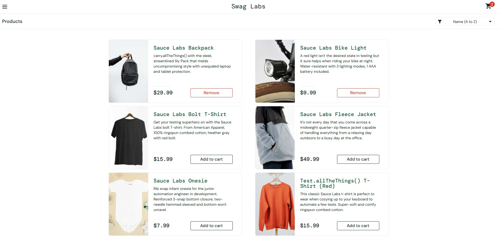

Automação de Testes E2E com Cypress — Sauce Demo
Cypress · JavaScript · Github Actions · ESLint · PrettierAutomação de testes E2E com Cypress para validação dos principais fluxos de um e-commerce, priorizados por uma matriz de risco, considerando impacto no negócio e probabilidade de falha.